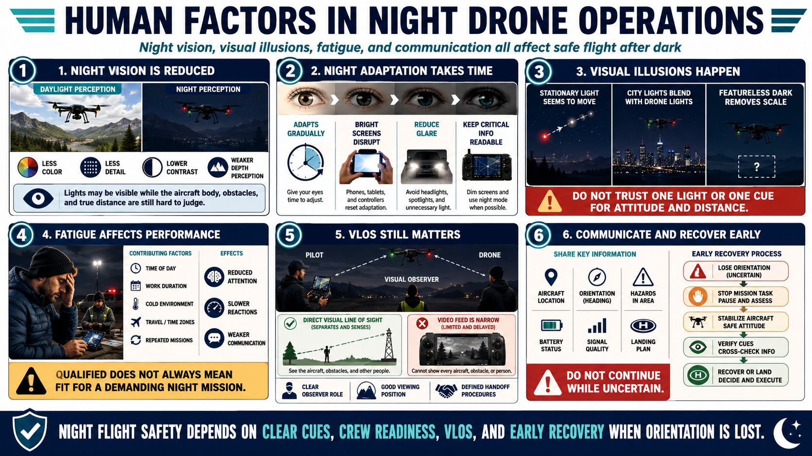

Human Vision and Situational Awareness
Connecting to LMS... Progress: in progress

Narration
Human night vision provides less color, detail, depth perception, and contrast than daylight vision. Small lights may be visible while the aircraft body, surrounding obstacles, and relative distance remain difficult to judge.
Night adaptation develops gradually and can be disrupted by bright phones, controller screens, headlights, or spotlights. Use approved display settings and position equipment to reduce glare without making essential information unreadable.
Visual illusions can affect orientation. A stationary light may appear to move, distant lights can merge with aircraft lights, and a featureless background can remove scale. Do not rely on one light or one visual cue to determine attitude and distance.
Fatigue reduces attention, communication, and reaction time. Consider time of day, work duration, cold, travel, and repeated missions during the crew briefing. A technically qualified pilot may still be unfit for a demanding night mission.
Maintain visual line of sight as required and operationally necessary. A video feed narrows attention and cannot show every aircraft, obstacle, or person. A visual observer can help, but roles, calls, viewing position, and handoff procedures must be clear.
Use brief communications for aircraft location, orientation, hazards, battery, signal, and landing. If the pilot loses orientation, stop mission tasks, stabilize, use verified cues, and recover or land rather than continuing while uncertain.